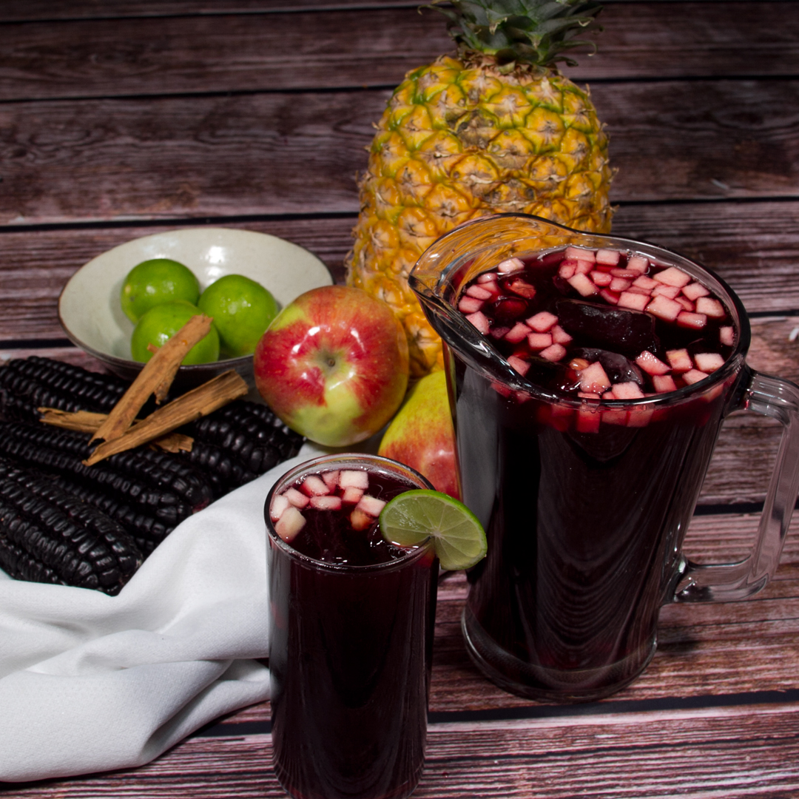
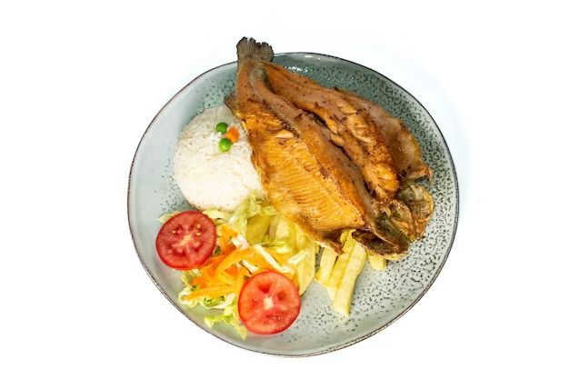
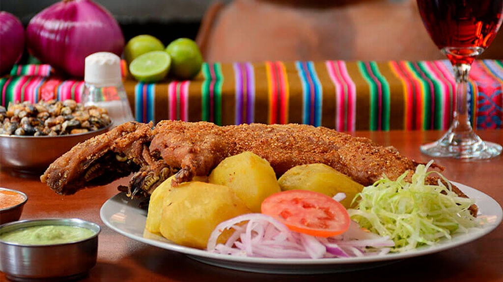

Platos Destacados





Fundado en 2010 en Huancayo, corazón del Valle del Mantaro, por Doña Carmen Mamani, El Sabor Andino nació con la misión de rescatar y preservar los sabores auténticos de los Andes centrales...
Desde un pequeño local familiar hasta convertirnos en un referente regional...
Te invitamos a ser parte de esta experiencia, a compartir con nosotros el sabor, la historia y la calidez de Huancayo en cada bocado.
Dirección: Jr. Ancash 345, Huancayo, Perú